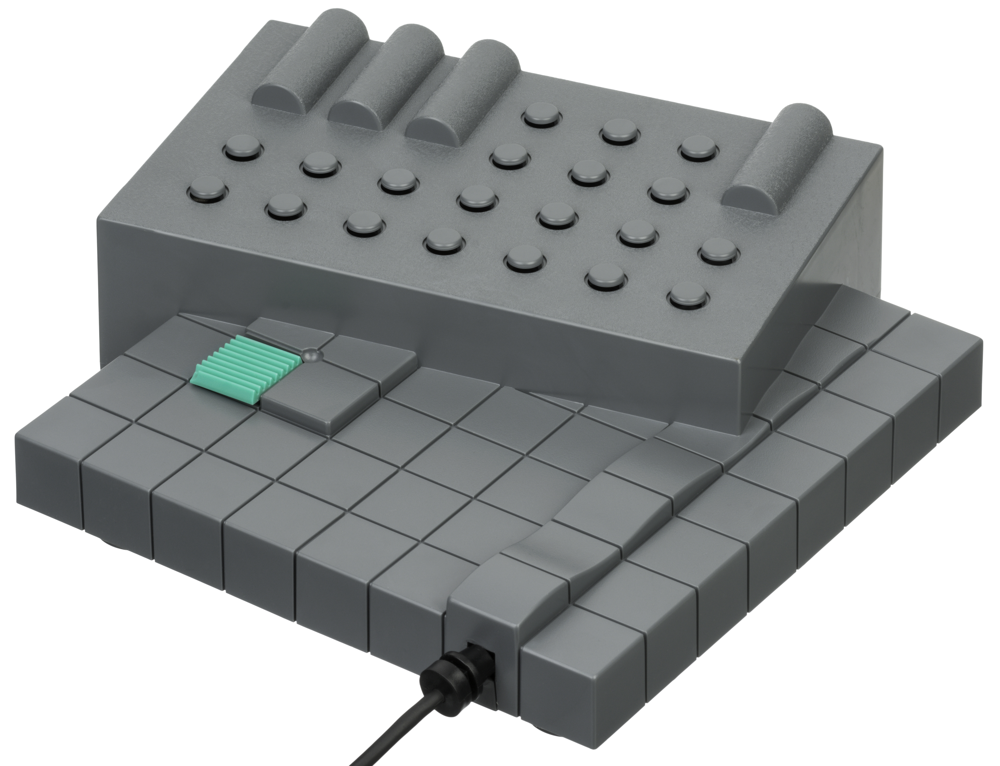
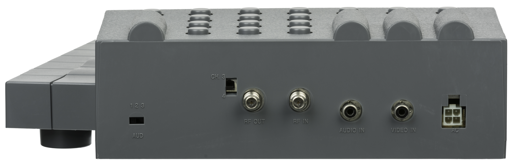

View-Master Interactive Vision
The VHS console that painted 8-bit sprites over live video — interactive television, 1988-style

Overview
The View-Master Interactive Vision is an interactive movie VHS console game system, introduced in 1988 and released in the USA in 1989 by View-Master Ideal Group, Inc. — the company behind the iconic stereoscopic View-Master reels. The system was built around a deceptively simple idea: play a VHS tape, but have the console generate its own 8-bit sprite graphics that are composited over the live video output. The VHS tape carried two audio tracks — one for one outcome, one for another — and the console switched between them based on the player's button presses. Characters on screen would address the player directly, ask for a choice, and the console would switch audio tracks and overlay graphics to create the illusion of interactive television.
Seven titles were released: four Sesame Street games ('Let's Learn to Play Together', 'Magic on Sesame Street', 'Let's Play School', 'Oscar's Letter Party'), two Muppet games ('Muppet Madness', 'Muppet Studios Presents: You're the Director'), and one Disney game ('Disney's Cartoon Arcade'). The system retailed for $120. The controller was a simple joystick with five colorful buttons.
The dual-audio-track technique was clever: the optional parts of the soundtrack were designed to fit the movement of the Muppets' mouths, creating the illusion that the video was recorded with only one soundtrack, with the digitally generated graphics further enhancing interactivity. The Disney game was the most game-like, containing a collection of arcade-style mini-games including a Frogger-inspired game where Mickey Mouse must cross a busy highway.
While the system was commercially modest, it occupies a unique position in the history of interactive television — a dedicated appliance that predated the CD-i and Sega CD by several years, using analog VHS tape as its storage medium. The Interactive Vision is now a sought-after collector's item.
Deep dive
Unlike the Terebikko (which decoded audio tones from the VHS tape to trigger simple responses) or the Action Max (which used brightness flashes on the CRT as a target stream), the Interactive Vision generated its own 8-bit sprite graphics internally. The console's CPU composited these sprites over the live video feed from the VCR, creating a hybrid visual layer. This meant the console could produce interactive game elements — collectible items, characters, score displays — that were not on the tape at all. The tape provided the backdrop and the dialogue; the console provided the interactive layer. This is a fundamentally different architecture from the other VHS-based systems in the museum.
The VHS tape carried two audio tracks. When the player made a choice, the console switched between them. The two tracks were recorded to fit the same mouth movements — so when Kermit asked the player to choose a song, both versions of the song ('Everything Was Wonderful!' vs. 'Everything Was Terrible!') were lip-synced to the same video. This was a clever low-bandwidth solution to interactive storytelling: the video didn't change, only the audio, yet the illusion of player agency was complete. The technique was a direct ancestor of the branching narratives in DVD/Blu-ray interactive features.
The Interactive Vision completes the museum's VHS-interaction triptych. Bandai Terebikko (1988) uses VHS as an audio data channel decoded by a 4-button toy telephone — parasocial conversation. Action Max (1987) uses VHS as a visual target stream and the light gun as an optical input — console-as-score-only. The Interactive Vision uses VHS as a backdrop for console-generated 8-bit sprite overlay with dual-audio-track branching — interactive movie. Three different interaction paradigms, three different VHS-era consoles, and the only thing they share is the tape format.
Team & pioneers
- View-Master Ideal Group, Inc. Manufacturer and distributor of the Interactive Vision system.
- ACTV, Inc. Original concepts for the interactive television technology used in the system.
Media

